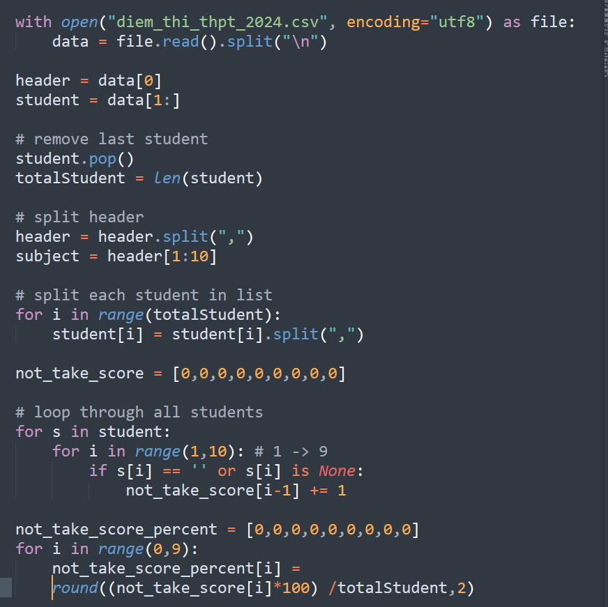
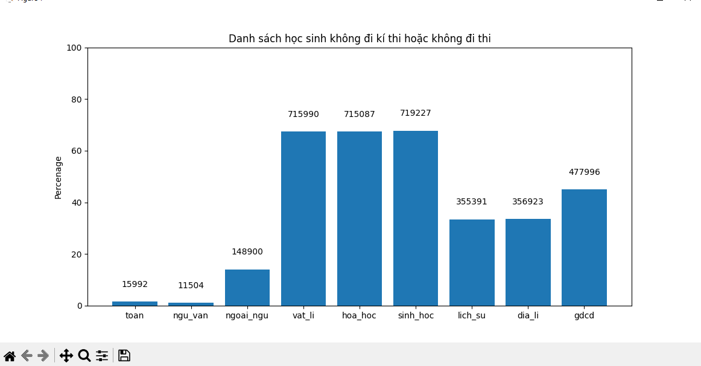
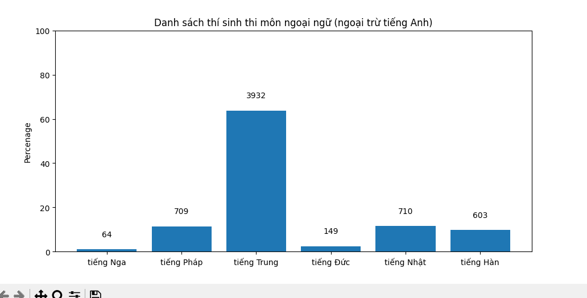
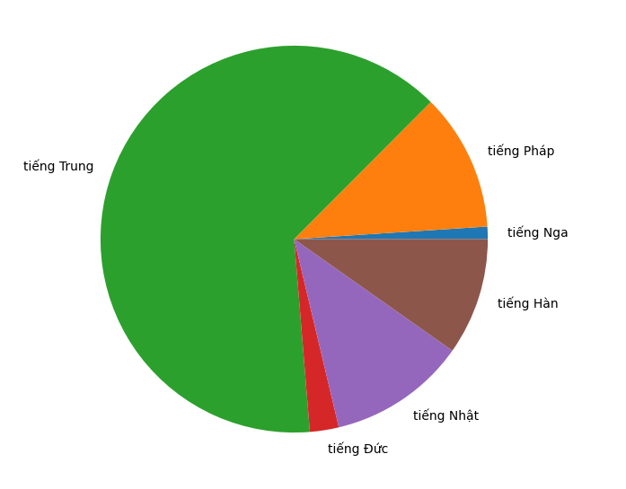

Bài viết nổi bật

Bài viết khác


PHÂN TÍCH ĐIỂM THI HỌC SINH THI ĐẠI HỌC NĂM 2024
TP.HCM, July 23, 2024 Tác giả: Phan Lu Vỹ
Thống kê và cào dữ liệu điểm số thi tốt nghiệp 2024 từ bộ giáo dục . Phân tích dữ
liệu bằng ngôn ngữ lập trình python .
Phân tích dữ liệu là 1 bước rất quan trọng
để xem dự đoán , phân nhóm hay đưa ra các nhận xét từ 1 nhóm dữ liệu để có thể đưa
ra 1 dự đoán. Thí dụ ta có 1 nhóm dữ liệu đã phân tích điểm thi từ đó có thể biết
được môn học nào nhiều người bỏ thi nhất. Hay môn nào nhiều thí sinh điểm 10 nhất
.Từ đó thấy được 1 cái nhìn trực quan về dữ liệu.
Và sau đây là các bước step
by step khi phân tích 1 lượng lớn data
- Bước 1 : thu thập data từ website
- Bước 2 : làm sạch dữ liệu
- Bước 3 : phân tích với thư viện Matplotlib
Bước 1 Thu thập dữ liệu từ website từ bộ giáo dục
Sử dụng thư viện
BeautySoup4 là 1 thư viện mãnh mẽ để crawl dữ liệu từ website. Hoặc ta có thể crawl
thông qua file HTMl và tìm id của số báo danh và cho lặp để thu thập dữ li
Bước 2 Làm sạch dữ liệu nếu bước 1 đã làm sạch ròi thì có thể skip bước này
Đối với việc crawl bằng file HTMl thì đây là bước khá quan trọng để có dữ liệu
làm sạch từ dữ liệu thô
Dữ liệu thô có sẵn dành cho việc phân tích
- Dữ liệu không chứa thông tin cá nhân của thí sinh, chỉ bao gồm Số báo danh và
điểm thi các môn của thí sinh.
- Dữ liệu này được cập nhật vào ngày 17/07/2024, không bao gồm điểm sau phúc
khảo.
File thô
- Sau khi tải về , dữ liệu sẽ có hơn 1 triệu dòng tương ứng với 1060063 thí sinh
thi , file được lưu dưới dạng .csv . Có thể dễ dàng mở bằng Excel
Bước 3 Phân tích dữ liệu
 Đoạn code sử dụng python để sử lí dữ liệu từ dữ liệu thô để thành 1 barchart BarChart danh sách số học sinh không đăng kí thi môn học hay bỏ thi môn học
Từ dữ liệu trên ta có thể đút ra 1 kết luận rằng năm nay số thí sinh thi ban tự nhiên
thấp hơn ban xã hội . Và môn ngoại ngữ là môn cũng được 1 kha khá thí sinh khôn thi.
Vậy lý do là gì ?
Những năm gần đây việc lấy điểm chứng chỉ ielts để thay thế,
hay miên thi môn tiếng Anh khá phổ biến. Vì thế ta có thể rút được 1 thứ là có nhiều
thí sinh sử dụng điểm thi Ielts để miễn thi ngoại ngữ nên số lượng không thi ngoại
ngữ chiếm 1 khoảng mặc dù nằm trong tổ hợp các môn chính bắt buộc .
Nhận định
thứ 2 mà tôi muốn nói đến là việc số lượng thí sinh ban xã hội là cao hơn là ban tự
nhiên năm 2024?
Xét từ góc độ này có khá nhiều lý do nhưng quan trọng nhất chắc
là việc bởi vì năm học 2024 là năm học cuối của chương trình cũ nên nhiều thí sinh
quyết định chọn ban xã hội để an toàn hơn , có tỉ lệ tốt nghiệp cao hơn là ban tự
nhiên. Lý do 2 : rất có thể các nhóm ngành thiên về xã hội , mỹ thuật , marketing
được các thí sinh 2k6 săn đón nhiều hơn là các khối ngành thiên về tư duy, kỹ thuật.
Dưới đây là đường link đến 1 báo uy tín đưa ra về nhận định thí sinh chọn ban xã hội

BarChart danh sách số thí sinh thi các môn ngoại ngữ ngoại trừ tiếng Anh
Ta dễ dàng nhận thấy rằng ngoại ngữ sau tiếng Anh mà phổ biến thí sinh học nhiều
nhất là : Tiếng Trung .Vì hiện nay Tiếng Trung là ngôn ngữ mẹ đẻ của hơn 1,4 tỷ
người, chiếm khoảng 1/5 dân số thế giới. Đây là ngôn ngữ được sử dụng rộng rãi nhất
trên thế giới, vượt xa tiếng Anh (khoảng 1,35 tỷ người sử dụng).

PieChart danh sách số thí sinh thi
các môn ngoại ngữ ngoại trừ tiếng Anh
Sau tiếng Trung là tiếng Nhật . Và 1 điều đáng ngạc nhiên hơn là tiếng Pháp lại phổ
biến gần bằng tiếng Nhật . Việc tiếng Nhật cũng khá là phổ biến đối với người Việt
cũng không gì lạ. Khi nhiều văn hóa, cơ hội việc làm mở rộng từ Nhật Bản và nhiều
trung tâm giảng dạy tiếng Nhật phổ biến tại Việt Nam. Vậy lý do nào khiến Pháp 1
quốc gia châu Âu mà lại cũng có số đông người theo học thế ?
Đầu tiên : các
ngành học nói riêng và các trường đại học nói riêng đang dần chuyển sang hội nhập
quốc tế và dạy nhiều ngôn ngữ như :
Đại học Ngoại thương: Nổi tiếng với chương
trình đào tạo tiếng Pháp chất lượng cao, đáp ứng nhu cầu học tập và nghiên cứu
chuyên sâu về ngôn ngữ và văn hóa Pháp.Hay Đại học Khoa học Xã hội và Nhân văn (Đại
học Quốc gia Hà Nội): Cung cấp chương trình đào tạo tiếng Pháp đa dạng, bao gồm
tiếng Pháp sư phạm, tiếng Pháp kinh tế, tiếng Pháp du lịch, v.v.
Lý do 2: Du
học Pháp là lựa chọn hấp dẫn cho nhiều học sinh Việt Nam với chi phí hợp lý và chất
lượng giáo dục cao. Hệ thống giáo dục tiếng Pháp tại Việt Nam được đánh giá cao với
nhiều trường đại học uy tín và đội ngũ giảng viên chất lượng.Nhu cầu nhân lực có khả
năng tiếng Pháp ngày càng cao trong nhiều lĩnh vực, đặc biệt là trong các công ty đa
quốc gia và tổ chức quốc tế.